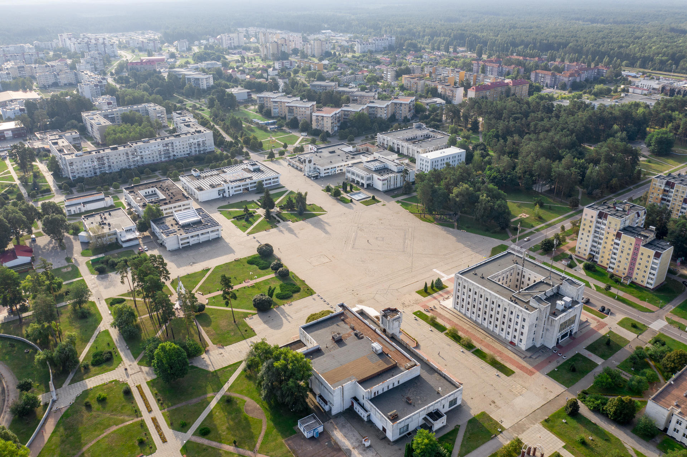
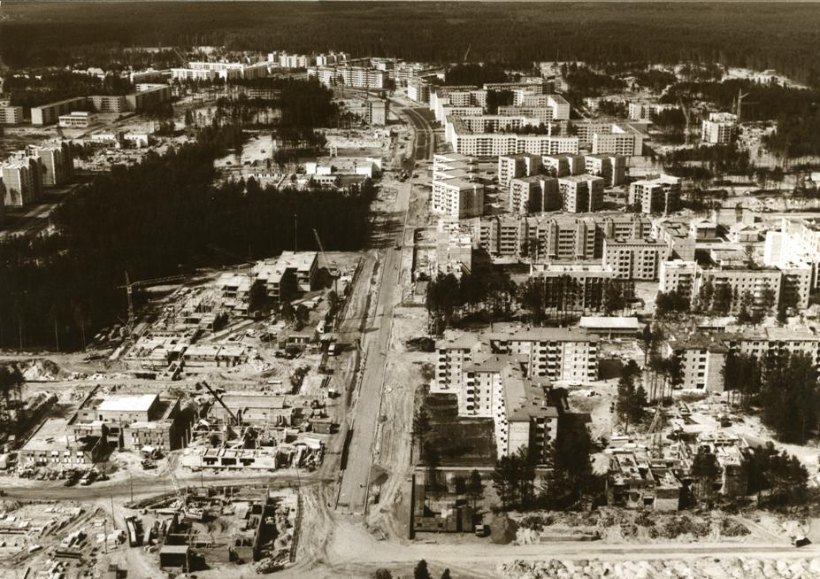
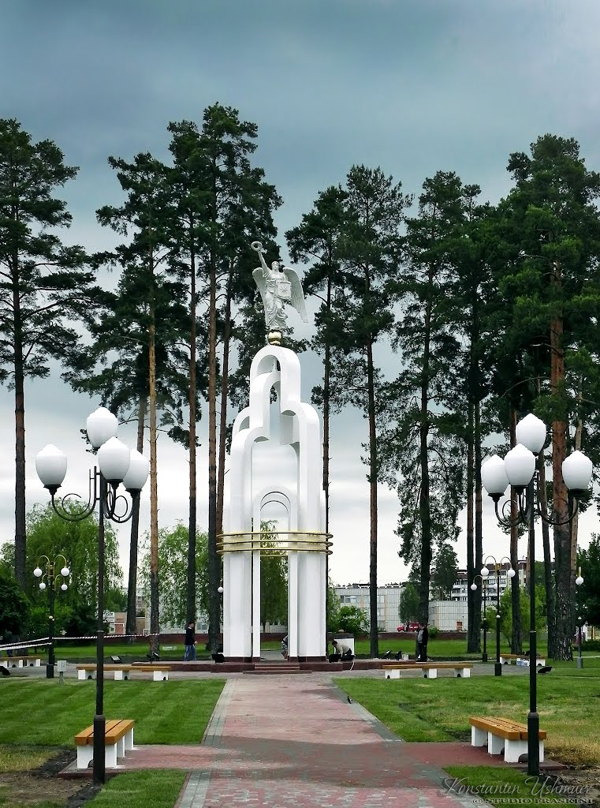
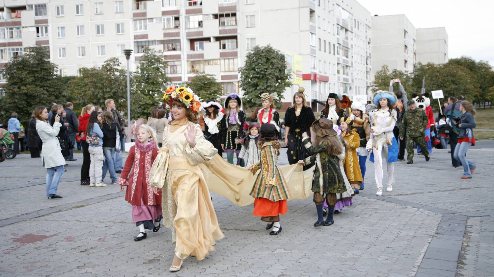
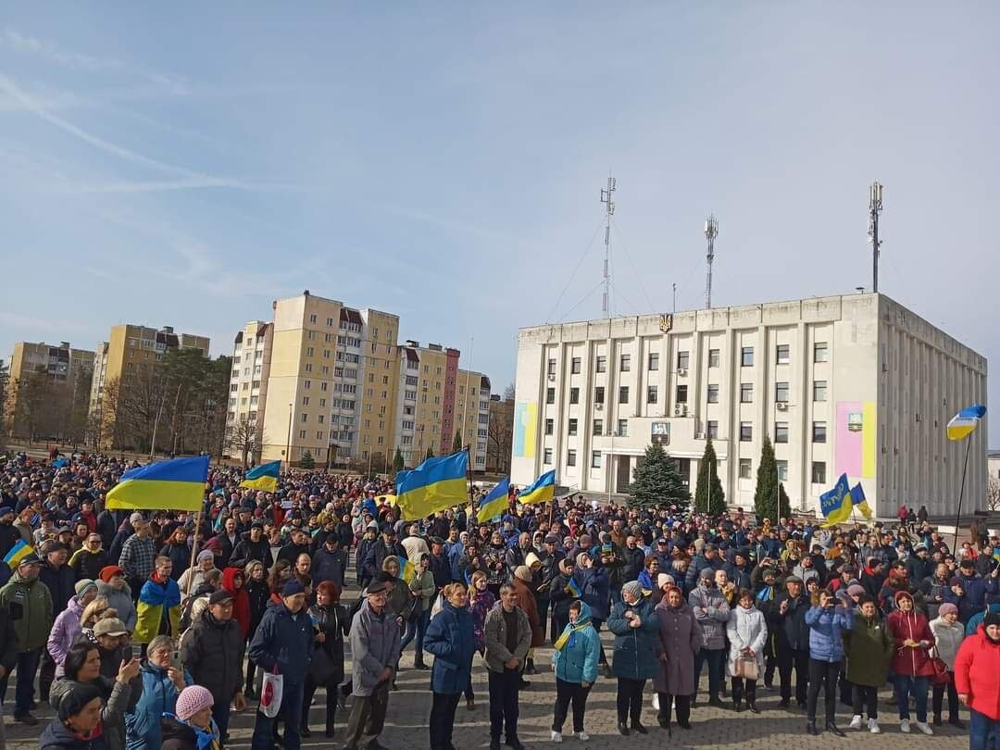

Slavutych: the kindest monument to the Chernobyl disaster
Learn about the history of Ukraine's youngest city and what life is like there
Explore moreFour chapters that define the identity, culture and resilience of Slavutych
-

History
Explore the events and determination that gave birth to a brand-new town
Explore history → -

Unique buildings
Built by architects and builders from eight Soviet republics, each leaving their national signature
Explore architecture → -

Traditions
Learn what local customs bring the community together year after year
Explore traditions → -

Resistance
How the city stood resilient during recent trials and the days of occupation
Explore war period →